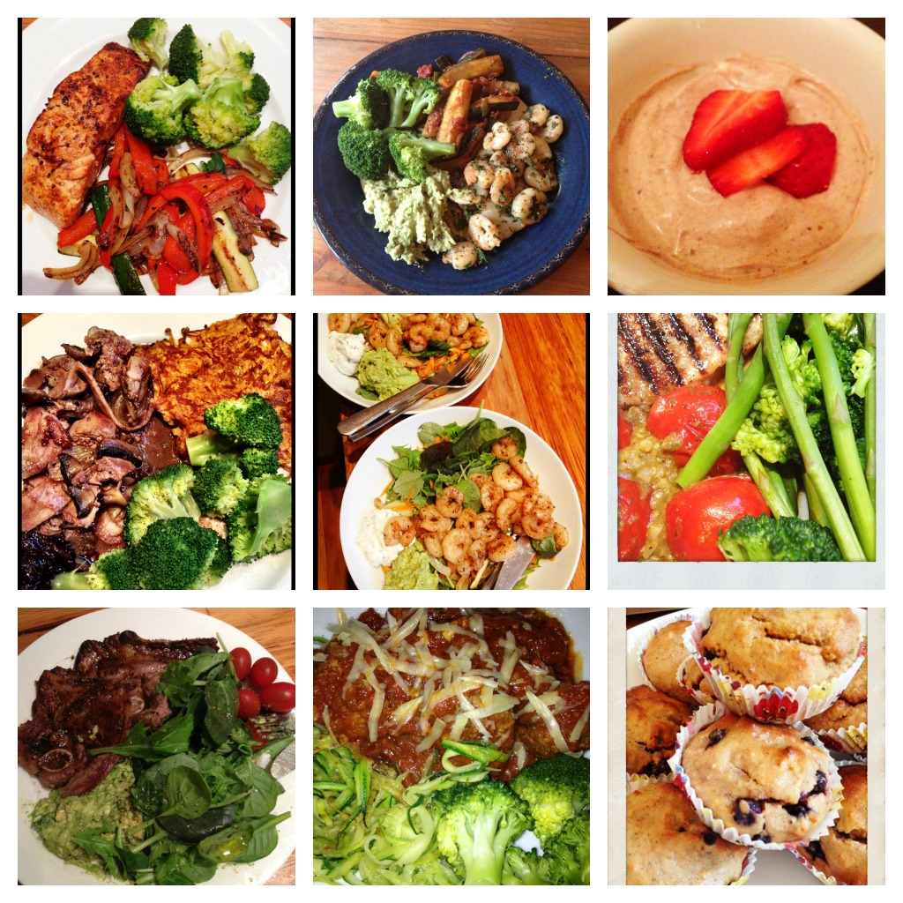
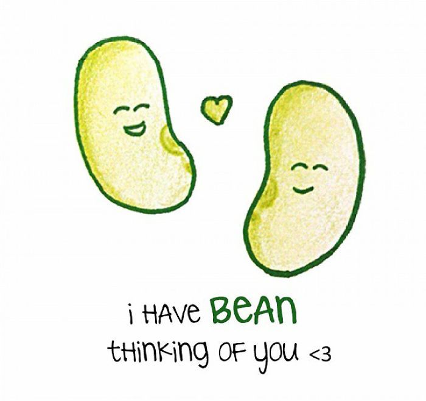
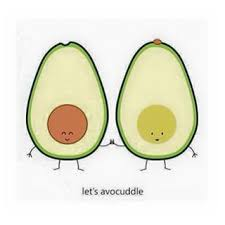

Turnip The Beet
Home
About
Recipes
Contact

-About-
-Turnip-
I developed my love of healthy food in my early teens.
My face became riddled with spots.
I desperatly looked for a cure.
It was my doctor who suggested taking a look at my diet.
I changed my diet completley substituting my fatty processed foods for leafy greens and lean proteins.
My face immediately cleared up and I havent looked back since.
-Beet-
I have been a dancer my whole life.
My life has revolved around diets from a very early aged.
Throughout my life i have tried all the dieting fads there are in attempt to keep up with the other dancers.
However i was always hungry and lacking energy.
It wasnt until i was about 16 that I realised that I can live a healthy lifestyle and stay slim while eating tasty food and being full.
I began experimenting with fruits and vegetables and stopped counting my calories.
Now I'm full of energy, eat a wholesome diet and I am still able to meet the weight standards for dancing.
 
Check out our Q and A YouTube Video
where we answered
your questions!